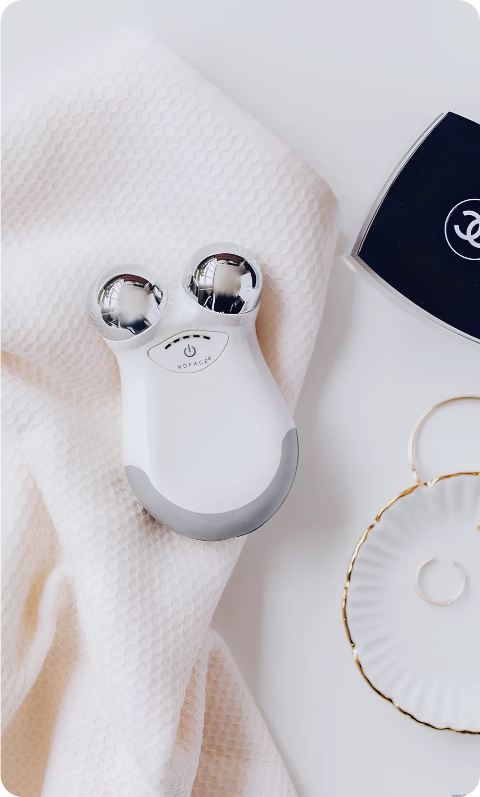

18 марта 2024
уход
для всех
Современные технологии предлагают широкий выбор умных устройств, которые помогают улучшить состояние кожи, проводя различные процедуры ухода за ней. Давайте познакомимся с некоторыми из них.
Умные массажеры для лица
Умные массажеры для лица - это инновационные гаджеты, которые предназначены для улучшения состояния кожи, стимуляции кровообращения и улучшения тонуса лицевых мышц. Они обычно оснащены различными технологиями, такими как микровибрация, ионизация, тепловое воздействие или светотерапия.
Микровибрация
Микровибрация - одна из основных технологий, используемых в умных массажерах для лица. Она помогает стимулировать кровообращение, улучшая поступление кислорода и питательных веществ к клеткам кожи. Это способствует уменьшению отечности, повышению тонуса и улучшению контуров лица.
Ионизация
Другая распространенная технология - ионизация. Умные массажеры могут использовать положительно или отрицательно заряженные ионы для улучшения проникновения активных ингредиентов из косметических средств в кожу. Это может усилить эффективность ухода за кожей и улучшить ее состояние.
Тепловое воздействие
Тепловое воздействие также может быть использовано в умных массажерах для лица. Тепло помогает расширить поры кожи, что способствует более глубокому проникновению увлажняющих средств и активных ингредиентов, а также способствует расслаблению мышц лица.
Светотерапия
Некоторые умные массажеры также могут включать светотерапию, используя различные цвета света для стимуляции процессов в клетках кожи, таких как синтез коллагена или уменьшение воспаления.

Аппараты для ультразвукового очищения кожи
Ультразвуковые аппараты для очищения кожи – это инновационные устройства, предназначенные для глубокого очищения кожи лица. Они используют ультразвуковые волны с высокой частотой, чтобы мягко, но эффективно удалить загрязнения, избыток кожного сала и ороговевшие клетки с поверхности кожи. Это позволяет улучшить текстуру кожи, уменьшить поры, улучшить циркуляцию крови и стимулировать обновление клеток.
Принцип работы ультразвуковых аппаратов для очищения кожи основан на феномене, называемом кавитацией. Во время процедуры ультразвуковые волны создают микроскопические пузырьки воды, которые колеблются и лопаются, вызывая мягкое расщепление загрязнений и излишков себума на поверхности кожи. Это позволяет очистить поры и улучшить проникновение активных ингредиентов из косметических средств.